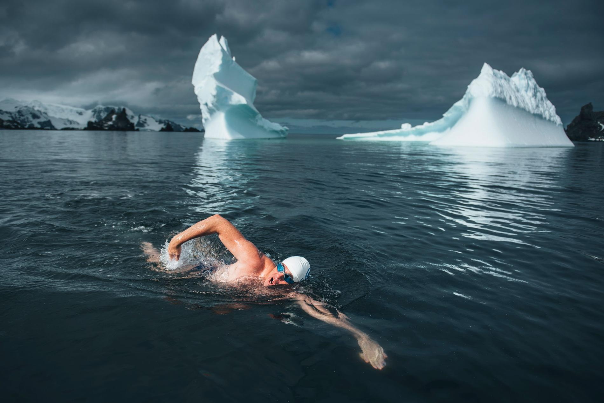

Siberia
O clima varia entre o clima polar e o clima continental. Na Sibéria situa-se o local habitado mais frio do mundo, a aldeia de Oymyakon.

Groelândia
O clima varia entre o clima polar e o clima continental. Na Sibéria situa-se o local habitado mais frio do mundo, a aldeia de Oymyakon.

Antartida
O clima varia entre o clima polar e o clima continental. Na Sibéria situa-se o local habitado mais frio do mundo, a aldeia de Oymyakon.